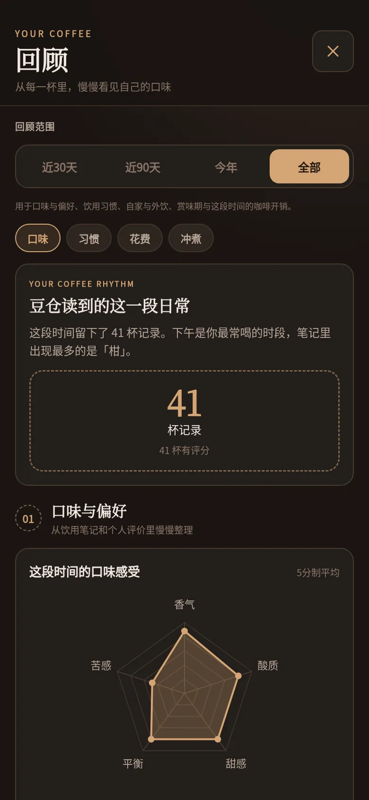
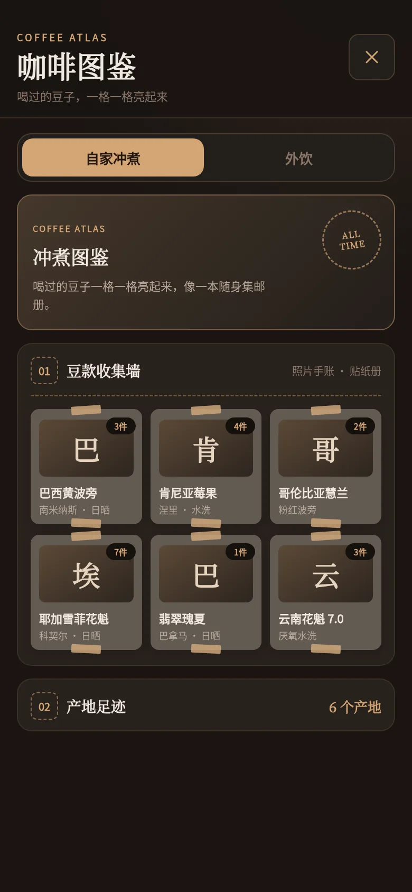

01入仓
从咖啡袋开始建档
产地、处理法、烘焙度、克重、价格与赏味期一处记全。APK 可离线识别包装文字，也能在本机抠出咖啡袋主体做成撕纸边手账封面；赏味将至和余量不足会主动提醒。
本地优先 · Android 与 Web
一包豆子 · 一段风味 · 一页日常
为咖啡爱好者设计的本地优先记录工具。记下每包豆子、每次冲煮与外饮，把喝过的豆子和咖啡馆点亮成图鉴，再从日历与回顾里看见自己的咖啡日常。




从入仓到回望
从建档、记录和冲煮，到日历、回顾与图鉴，所有功能都围绕同一份本地数据自然衔接。
产地、处理法、烘焙度、克重、价格与赏味期一处记全。APK 可离线识别包装文字，也能在本机抠出咖啡袋主体做成撕纸边手账封面；赏味将至和余量不足会主动提醒。
自家冲煮会自动扣减库存，外饮则记录咖啡馆、饮品、价格、地点与照片。店铺、同店饮品和地点会从本机历史联想补全，每杯都能留下总评、多维风味、笔记和最多 3 张照片。
按冲煮方式保存粉水比、水温、研磨、设备与分段步骤；手冲时进入大字计时辅助，逐段提示注水并保存实际用时。满意的饮用记录可另存方案，也能用离线分享码和二维码带走。
月历按天查看杯数、用豆、花费与评分，年历用热力图串起全年。回顾继续整理口味、习惯、近 12 个月开销和手冲表现，走完的自然月与年份会沉淀成咖啡月报、年报。
冲煮图鉴与外饮图鉴分开点亮豆款、咖啡馆、产地、处理法、地点和里程碑。豆袋与饮用照片可散开浏览，同店多张照片会在封面轮播；整本图鉴还能离线生成分享长图。
Android 使用私有 SQLite，Web 使用 IndexedDB；不登录、不联网也能完整使用，并可随时导出备份。云同步默认关闭，只有登录并主动开启后才在 Android 与 Web 间同步数据与图片。
咖啡日历 · 回顾 · 图鉴
月历查看当天喝了什么、用了多少豆、花了多少钱，也能回看评分；年历则用热力图串起整年的饮用节奏。
从评价和饮用笔记中整理口味、习惯、花费与冲煮表现；走完的月份和年份，还会留下咖啡月报与年报。
自家冲煮与外饮分栏收藏：喝过的豆款、咖啡馆、产地、处理法、地点和里程碑，都会在记录累积后慢慢亮起来。
这些内容都基于本机记录整理，无需登录。
界面一览

离线与隐私
默认完全离线：数据保存在你的设备（Android SQLite / Web IndexedDB），不需要账号或网络，拍照识别只申请相机权限。云同步是可选功能，仅在登录并开启后使用；数据经 HTTPS 传输、仅你自己可见，你可以随时退出账号或删除云端副本。
Android 7 及以上安装 APK；任何现代浏览器打开 Web 版即可使用，可添加到主屏当作 App。
APK 通过 GitHub Releases 分发（正式签名版）。